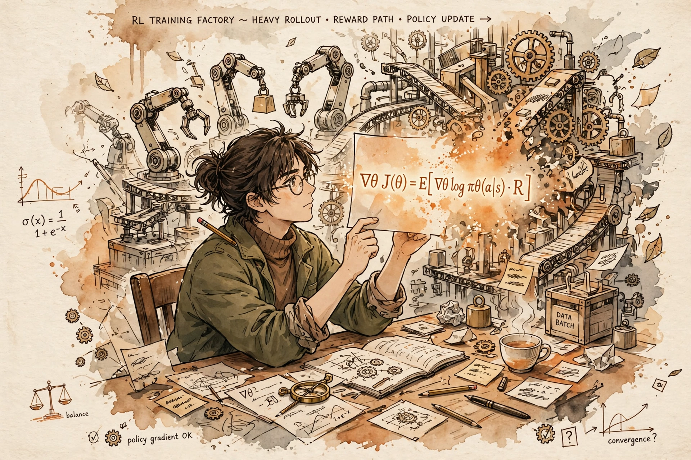

Saturday, October 3, 2026
Yesterday you operated the full RLHF machine — reward model, value head, rollout loop, clip, KL penalty. Today the machine dissolves into a single line of math: the KL-constrained objective has a closed-form solution, and the reward was hiding inside the policy all along.

B5 — PPO: The Clip That Tames the Optimizer. Recap: PPO climbs the KL-constrained objective maxπ E[r(x,y)] − β KL(π‖πref) with a clipped surrogate, a value head, and a five-stage rollout loop that keeps four model copies in GPU memory. Every piece of that machine exists to solve one optimization problem safely. Today you solve that problem on paper instead of climbing it. B3 — the RLHF pipeline: stage three's one-line objective becomes today's derivation starting point. B4 — Reward Modeling: the Bradley-Terry loss you used to fit the judge is the exact loss the policy will now fit directly — and the over-optimization curve (proxy climbs, gold peaks, then declines against d = √KL) does not vanish when the judge goes implicit; it hides inside a log-ratio, which is why today's failure modes still echo B4. Spaced retrieval, third appearance: remember the masked-CE averaging subtlety from SFT — "watch token count, not example count"? It returned in yesterday's token-level PPO loss; it returns again today, because DPO's implicit reward is a sum over token log-probs, and sequence length becomes a reward-hacking lever all on its own.
Start with what PPO costs, because the entire algorithm is downstream of that bill. Four model copies in GPU memory: policy, reference, reward model, value head. A rollout loop with generation — the slowest operation in the building — sitting inside the training step. A reward model that must be retrained the moment the policy drifts off its data, or B4's hacking curve eats you alive. Five hyperparameters answering "how far may the policy move?" in five different dialects. PPO works, but it is a machine you maintain. DPO's authors asked a dangerous question: the thing the machine is optimizing — the KL-constrained reward objective — does it have a closed-form solution? For most RL objectives the answer is no. For this one, the answer is yes, and it has been sitting in the RL textbooks the whole time. The optimal policy for maxπ Ey~π[r(x,y)] − β KL(π(·|x) ‖ πref(·|x)) is a Boltzmann distribution over the reference, tilted by the reward:
Now read that equation backwards — solve for the reward: r(x,y) = β log(π*(y|x)/πref(y|x)) + β log Z(x). The reward is the log-ratio of the optimal policy to the reference, plus a term that depends only on the prompt. The judge was never a separate thing: any policy already encodes a reward in its own log-ratios. Your language model is secretly a reward model — the paper's title, and now the derivation, says it out loud.
Plug that reward expression into B4's Bradley-Terry model, p(yw ≻ yl | x) = σ(r(x,yw) − r(x,yl)), and the partition function cancels — Z(x) appears in both terms and vanishes in the difference. What survives is a loss over policies alone:
Read it as classification, not RL: for each prompt with a preferred and a dispreferred completion, the sigmoid asks "does the policy rank the winner above the loser, relative to the reference?" and the log-loss pushes it toward yes. The gradient tells the deeper story: ∇L = −β E[ σ(r̂l − r̂w) · (∇log πθ(yw) − ∇log πθ(yl)) ], where r̂ = β log(πθ/πref) is the implicit reward. The weight σ(r̂l − r̂w) is large exactly when the model currently ranks the pair wrongly, and decays toward zero as the ranking becomes correct. Yesterday's clip was an engineered mechanism that said "don't get rich on one token" — DPO's weight is the same caution arrived at analytically: the update concentrates on the pairs the model still gets wrong and leaves mastered pairs alone. And β, which was the KL-penalty strength in PPO, survives as the temperature of the implicit reward: small β keeps the log-ratios on a tight leash near the reference; large β lets preferences move the policy aggressively. One knob, same job, no adaptive controller required.
First, the derivation's hidden assumption. The closed form is exact only if the policy class can represent the optimum and the preference data is consistent with a single Bradley-Terry reward — the same transitivity assumption B4's judge quietly makes. Violate it — noisy labels, cyclic preferences, genuinely multimodal "good" answers — and DPO is fitting a reward that doesn't exist; it fits the noise instead. That is why DPO is famously sensitive to label noise, and why the documented inconsistencies in the Anthropic HH dataset bite DPO harder than they bite PPO: PPO's online rollouts can route around bad labels, while DPO's static loss memorizes them.
Second, the memory bill. The Staff-level line for the F1 design doc: PPO holds policy + reference + reward model + value head (four copies, plus optimizer states); DPO holds policy + reference (two). But note what you do not get to delete: πref is still there, frozen, anchoring the KL budget. DPO is not reference-free — that is ORPO's trick, below.
Third, the length leak. The token-count ghost's third appearance: log πθ(y|x) is a sum over token log-probs, so a longer completion accumulates a larger-magnitude implicit reward whether or not it is better. SFT said "watch token count, not example count" for masked-CE averaging; PPO inherited it as token-level loss normalization; DPO inherits it as a length bias that lets verbosity masquerade as quality. SimPO's fix — dividing the log-ratio by |y| — is the same lesson wearing new clothes.
DPO is fully off-policy: it trains on static preference pairs and never generates during training. That deletes the rollout bottleneck — the entire reason B8 exists for PPO — but it also deletes exploration. The policy can never learn from a completion it never sees, and once it drifts from the preference distribution there is no online correction the way PPO's fresh rollouts provide. Practitioners answer with iterative (online) DPO: regenerate preference data from the current policy between rounds, recovering some of PPO's exploration at a fraction of the cost. DPO also still over-optimizes: the implicit reward is a reward model with no separate parameters, and B4's curve survives — the log-ratio can be pushed into regions the reference never modeled, especially under a weak reference.
The variant family tree — know the pattern, not just the acronyms. Every variant answers one of DPO's three bills — the reference-model tax, the length leak, or the noise sensitivity. IPO (Azar et al., 2023) adds a quadratic regularization term so the model stops overfitting the Bradley-Terry margin — the answer to "why does DPO overfit deterministic preferences?" KTO (Ethayarajh et al., 2024) replaces win/lose pairs with binary thumbs-up/down feedback via prospect theory, for when you have "good/bad" but no "A beats B". ORPO (Hong et al., 2024) folds an odds-ratio preference term directly into SFT — no reference model, a single training run. SimPO (Meng et al., 2024) drops the reference model, normalizes by length, and adds an explicit margin — the length-leak fix plus reference-tax relief in one.
B7 — GRPO/RLOO: the fork in the road. Yesterday's PPO pain had two exits: DPO deleted the reward model; GRPO deletes the value head instead and keeps the RL loop. Tomorrow's lesson needs today's contrast — "DPO removes the judge, GRPO removes the critic." B9 — RLVR: a different escape from reward hacking — swap the learned judge (implicit or explicit) for a deterministic verifier; the KL machinery from this whole week stays, the hacking math changes. B8 — RL infra: the rollout loop PPO needed is the system DPO doesn't have; B8 is now a story about what on-policy RL costs at data-center scale, and why DPO's deletion of it was a systems decision as much as a mathematical one. B2 — SFT data curation: preference-data quality is now the entire alignment stack, because DPO pipes dataset noise straight into the policy with no reward model to absorb it. F1: the memory-budget line — two copies versus four, the design-doc arithmetic that decides which algorithm your cluster can afford.
"Why did DPO spread so fast, and when would you still pick PPO?" → "DPO starts from the observation that the KL-constrained RL objective PPO optimizes has a closed-form solution: the optimal policy is the reference tilted by exp(r/β). Invert it and the reward is just β times the log-ratio of policy to reference, plus a prompt-dependent constant. Plug that into the Bradley-Terry preference model and the constant cancels, leaving a pure classification loss on (prompt, winner, loser) pairs — negative log-sigmoid of the β-scaled log-ratio difference. The gradient upweights exactly the pairs the model still ranks wrongly. So DPO optimizes the same objective as RLHF with no reward model, no value head, no rollouts, no clip — two model copies instead of four, one stable loss. The price: fully off-policy, so no exploration and no online correction; sensitive to label noise; a length bias because log-probs sum over tokens — that's what IPO, KTO, ORPO, and SimPO each fix. I'd pick DPO with clean preference data and a strong SFT start; I'd keep PPO — or go online — when the reward only reveals itself through trajectories, like agentic tool use, where static pairs can't teach what exploration finds." Say it once from memory before the workout and node B6 is yours.
DPO: The Machine That Became an Equation — Letter brief · Deep-dive study guide · Full curriculum
— The Infra Notebook